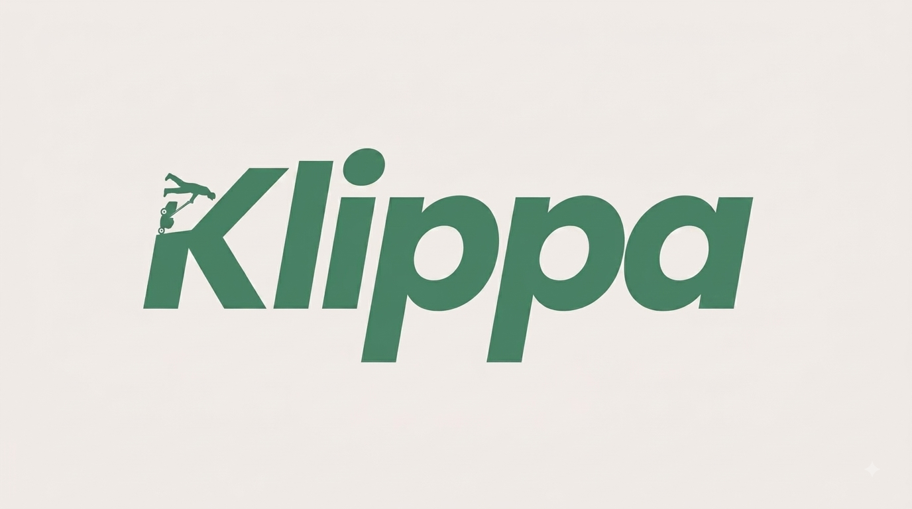

Every mow counts
You mow your own lawn, and you do it right. Klippa is the tracker for people who treat the yard as a craft. Log every mow, map your yard on satellite, build your streak, and watch the work add up to something you can point at.
iPhone only · free during the beta · opens in the TestFlight app
Nobody hands out medals for a clean edge and a full season of Saturdays. The stripes fade, the grass grows back, and the only person who knows what it took is you. Klippa keeps the record. Every mow, every mile, every week you showed up, so the work speaks for itself. Built by someone who mows, for people who mow.
iPhone only · free during the beta · opens in the TestFlight app